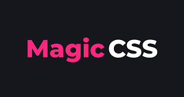
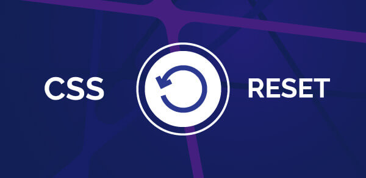

Эпизод 3:
Начало изучения магии CSS
В этом эпизоде юные падаваны начнут знакомство с каскадными таблицами стиля именуемыми CSS. Их ждет увлекательное путишествие по языку, который отвечает за описание внешнего вида HTML-документа. Подавляющее большинство современных веб-сайтов работают на основе связки HTML+CSS.
CSS используется для определения стилей (правил) оформления документов — включая дизайн, вёрстку и вариации макета для различных устройств и размеров экрана. У языка CSS относительно простой синтаксис. Сначала прописывается селектор — он выбирает конкретный элемент на странице. Потом, после фигурных скобок, указываются свойства со значениями — между ними ставится двоеточие. Сами свойства отделяются друг от друга точкой с запятой.
У языка CSS относительно простой синтаксис. Сначала прописывается селектор — он выбирает конкретный элемент на странице. Потом, после фигурных скобок, указываются свойства со значениями — между ними ставится двоеточие. Сами свойства отделяются друг от друга точкой с запятой.
Способы подключения CSS:
Глобальный CSS
Глобальный CSS помещается в контейнер "head" конкретной страницы. При таком варианте подключения классы и идентификаторы (ID) могут быть использованы для обращения к CSS коду, однако, они будут активны только на этой конкретной странице.
Внешний CSS
Возможно самый удобный вариант для подключения CSS к вашему сайту, это его привязка к внешнему .css файлу. В этом случае все изменения сделанные во внешнем CSS файле, будут в целом отражаться на вашем сайте.
Внутренний CSS
Внутренний CSS используется для конкретного тега HTML. Атрибут "style" используется для настройки этого тега. Этот вариант подключения CSS не является рекомендованным, так как в этом случае необходимо настраивать каждый тег HTML по отдельности.
Приоритетность по убыванию:
- .class.class{}
- .class tag{}
- tag .class{}
- tag tag{}
- tag{}
Обнуляющий стиль CSS
У каждого браузера есть свои предустановленные правила оформления веб-страниц и элементов на них (user agent stylesheet), подключаемые автоматически по умолчанию. Тем не менее, большинство верстальщиков при создании нового проекта добавляет в него специальный файл обнуляющий CSS, который осуществляет полное обнуление CSS стилей и позволяет разработчикам творить с «чистого листа».